«Проснулся среди ночи». «Рабочий день закончен». «Перед сложным разговором». Не медитации вообще — голос, написанный под конкретный момент вашего дня.
Экран дышит вместе с голосом. В наушниках — бинауральная глубина.
Каждая написана под момент, а не «для расслабления вообще». Девять на старте — новые добавляются каждый месяц.
И это только начало — каталог растёт.
Фон практики расширяется 4 секунды и отпускает 6 — в такт голосу. Дыхание подстраивается само: это работает, даже когда глаза почти закрыты.
Живой, программный, у каждого момента — свой оттенок.
Справа — настоящая анимация, не видео.
Бинауральный фон — объёмный стереозвук под голосом. Он не «лечит частотами», он делает погружение ощутимо глубже. Включается одним переключателем перед стартом.
Ночной режим с автозатемнением, таймер сна, крупные кнопки для управления одной рукой в темноте. Сонные практики не поздравляют — экран гаснет вместе с голосом, потому что вы уже спите.
Потом — 399 ₽ в месяц. Отмена в один тап, без вопросов и удержаний.
Установите напрямую — это займёт минуту.
Кнопка выше. Файл сохранится в «Загрузки».
Откройте файл — Android спросит один раз: «Разрешить из этого источника».
Значок-дерево появится на экране. Первая практика уже ждёт.